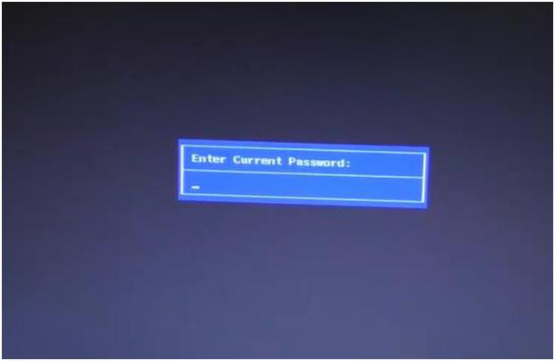
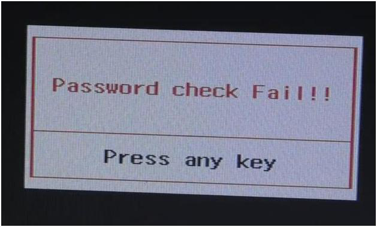
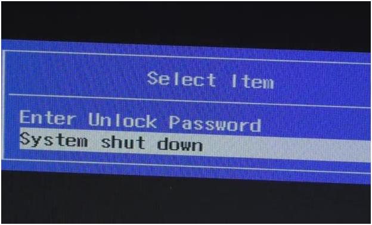
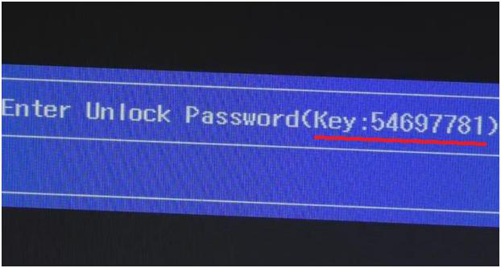

Рассмотрим, как можно программным способом снять пароль на вход в BIOS ноутбука на примере ACER.
Этот алгоритм будет работать и на многих других ноутбуках: eMachines, Packard Bell и.т.д.
Включаем ноутбук.
Во время загрузки постоянно жмем клавишу «F2»(для входа в биос).
Ноутбук выдаст сообщение на экран с просьбой ввести текущий пароль.

Вводим любой набор символов, нажимаем кнопку «Enter».
Появится сообщение, что пароль не прошел проверку.

Повторяем ввод неправильного пароля еще два раза.
После этого ноутбук выдаст сообщение, в котором будет спрашиваться, что дальше сделать – ввести пароль для разблокировки или продолжить загрузку системы.

Выбираем первый вариант.
Нажимаем кнопку «Enter».
Ноутбук выдаст следующее сообщение, в котором будет указан пароль для разблокировки.

Теперь, для получения пароля для входа в BIOS, необходимо воспользоваться дешифратором (генератором) мастер паролей.
Сделать это можно на сайте «bios-pw.org»